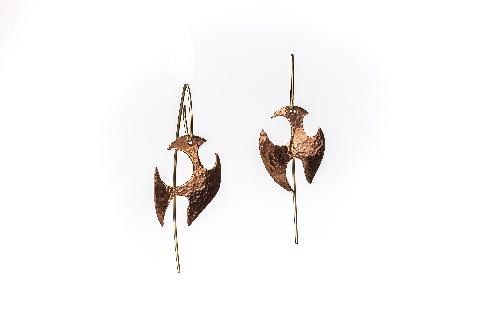
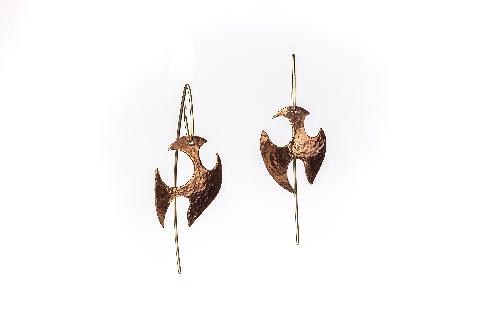

Handcrafted Jewelry by
Adam Russcher
As an exploratory metal and glasssmith, my jewellery and art pieces are rarely planned out ahead of time. My designs evolve during the fabricating of the different materials, forming and shaping by hand, flame or hammer blows. The modelling can move very quickly, other times components wait to be paired together somehow in some balance. Its a sculptural process that has to finalize with something original and innovative, possibly wearable and attractive. Often my pieces resemble some buried treasures dug from the earth, having antique presence of unknown age and origin.
Please contact me for more details if you are interested in any of my collections for movie props or any custom work or orders. Thanks!
-Adam
 
